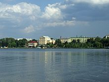

1. Тернопільський став

Тернопільський став або Тернопільське озеро (до 1991 — Комсомольське озеро) — велика штучна водойма в Тернополі, створена на місці боліт на річці Серет.
Площа водосховища становить 300 га, повний об'єм — 12,6 млн м³, корисний об'єм — 6,6 млн м³. За площею водойма відповідає тернопільському Східному масиву.
Тернопільському ставу приблизно стільки ж років, як і місту Тернополю: Ян Амор Тарновський, засновник Тернополя і власник фортеці, 15 березня 1548 року отримав привілей на будівництво греблі та створення ставу. Збудовано водойму в заплаві річки Серет як оборонну ланку від нападів турків і татар, що забезпечує фортеці Тарновського ще більшу неприступність.